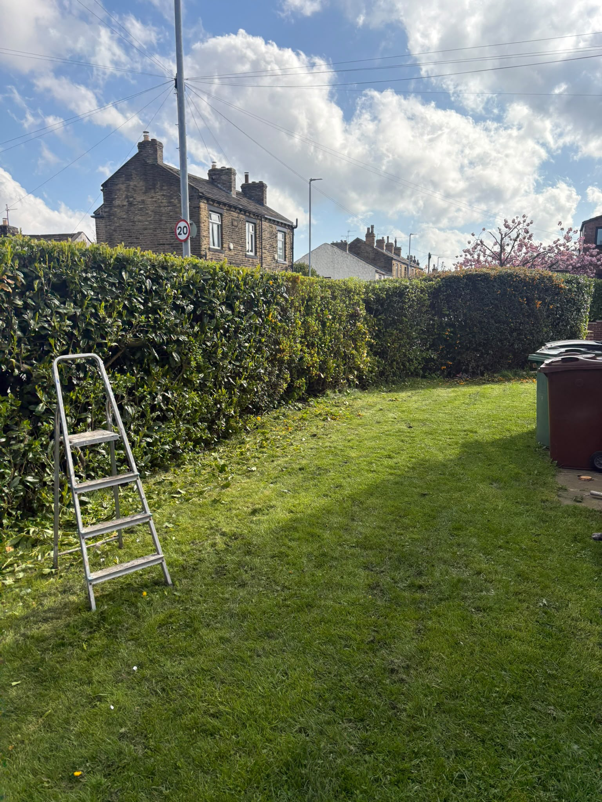
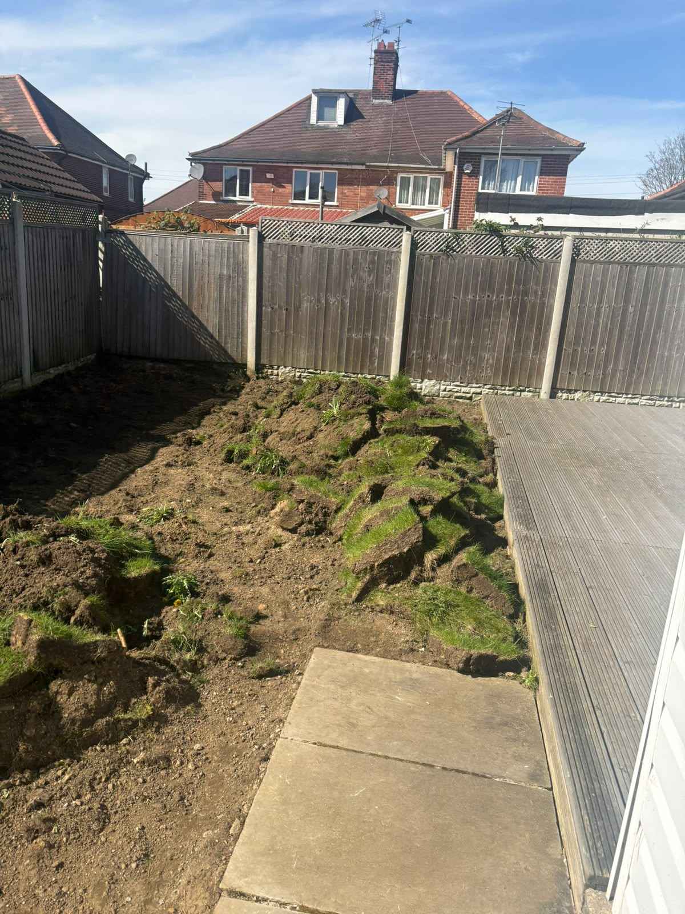
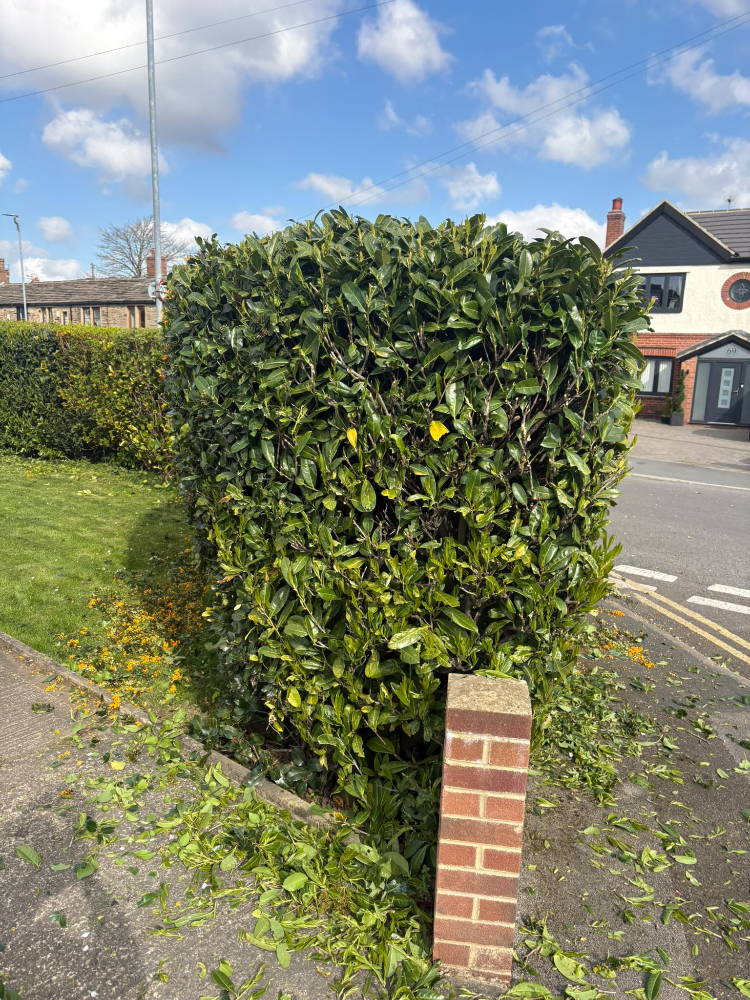
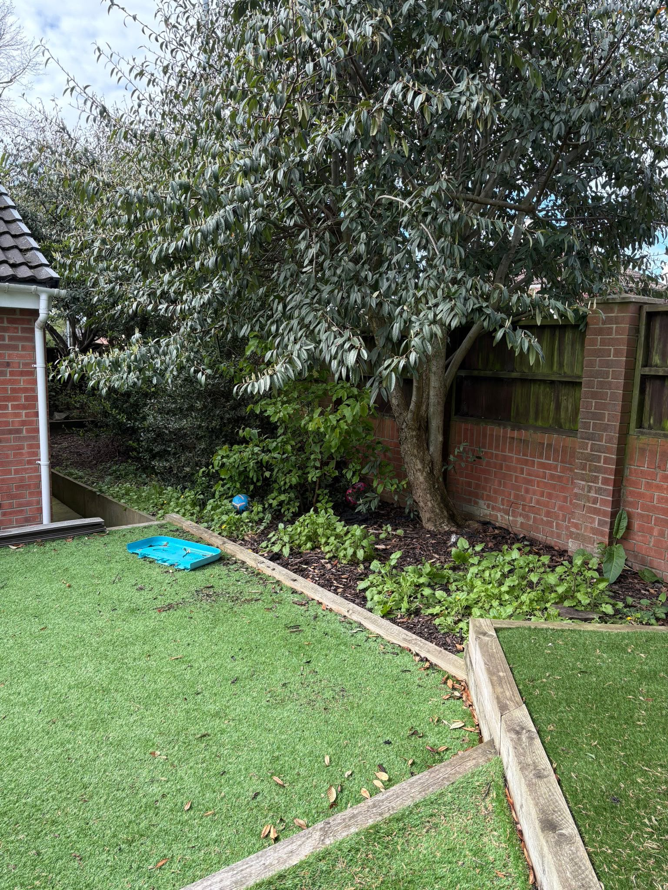

01
Tree Services
Pruning, crown reductions, shaping, dismantling and removal.
View service →Professional tree and garden work with a straightforward approach. Clear pricing, tidy finishes and jobs done properly across West Yorkshire.


From hedge reductions and tree work to garden clearances, we keep the process simple and leave the site looking right.
Pruning, crown reductions, shaping, dismantling and removal.
View service →Cutting, trimming, reductions and removal for overgrown boundaries.
View service →Clearances, grass cutting, tidy-ups and general garden maintenance.
View service →Stump removal, grinding, green waste removal and larger clearances.
View service →We are not trying to make garden work complicated. You tell us what needs doing, we give you a clear quote, carry out the work and leave things tidy.
We keep the job straightforward from first contact to finish.
Quotes are based on the work involved, with no unnecessary extras.
Green waste and cuttings are dealt with so the job is actually finished.


The full quote form is deliberately kept off desktop. Scan this code with your phone and it takes you straight to the mobile quote section.
For a quick quote, send over the job details below. Add photos when you contact us so we can understand the work before arranging a visit.